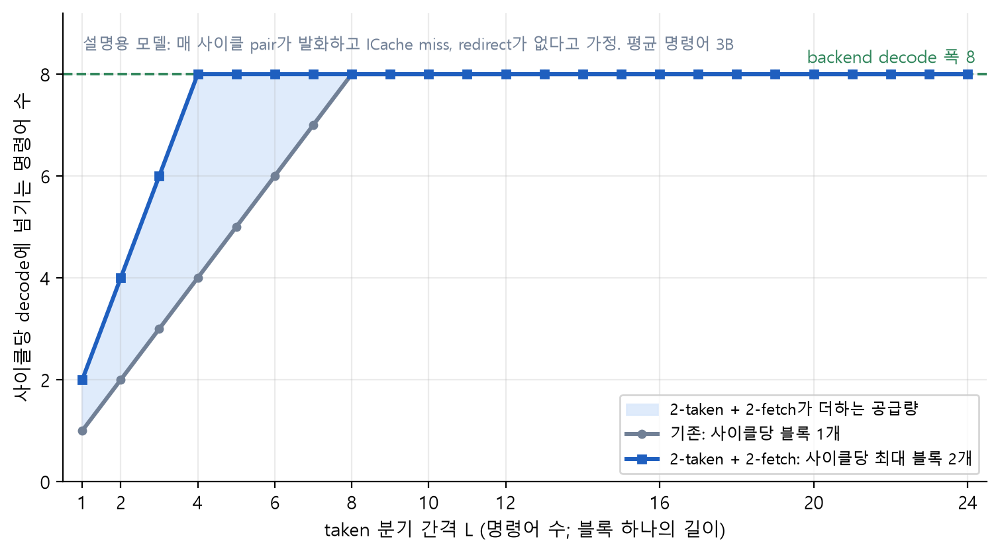
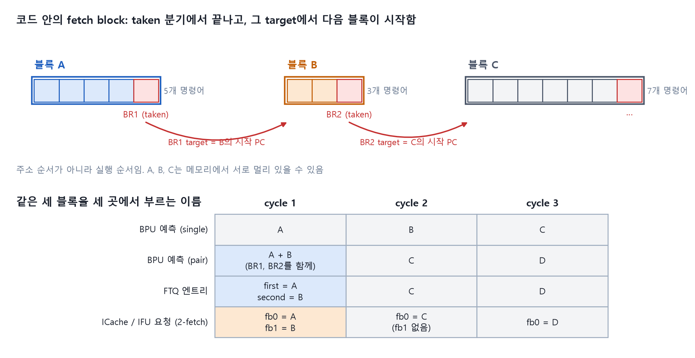

들어가며 · 왜 한 사이클에 두 블록인가
Kunminghu V3의 backend는 사이클마다 명령어 8개를 decode하고 rename하고 commit한다. 그 폭을 채우는 일은 frontend의 몫이다. 그런데 frontend는 사이클마다 fetch block 하나만 내보낸다. 블록이 길면 문제가 없다. 블록이 짧으면 backend는 8개를 받을 자리를 비워 둔 채 한두 개만 받는다.
이 장은 그 "짧은 블록"이 얼마나 흔하고, 왜 기존 수단으로는 해결되지 않으며, 그래서 왜 블록 수를 둘로 늘리는 길을 택했는지를 설명한다. 뒤 장에서 계속 나오는 블록 A, B, C라는 이름도 여기서 정한다.
이 장에서 배우는 것
- frontend 공급량의 병목이 바이트 폭이 아니라 "사이클당 블록 수"라는 점을 설명할 수 있다.
- fetch 폭 확대, 예측기 2회 읽기, 큐 확대가 왜 답이 되지 못하는지 말할 수 있다.
- 블록 A, B, C, BR1, BR2, first/second, fb0/fb1이 각각 무엇을 가리키는지 그림으로 설명할 수 있다.
블록은 taken 분기에서 끝난다
frontend는 연속한 주소의 명령어를 한 덩어리로 가져온다. 이 덩어리가 fetch block이다. 덩어리는 두 가지 이유로 끝난다. 64바이트 한계에 닿거나, taken 분기를 만나거나다. taken 분기 뒤의 명령어는 다른 주소에 있으므로 같은 덩어리에 담을 수 없다.
그래서 블록의 길이를 정하는 것은 프로그램이다. 정수 코드에서는 명령어 대여섯 개마다 분기가 하나 있고, 그중 상당수가 taken이다. 워크로드마다 다르지만 taken 분기 사이의 거리가 명령어 10개 안쪽인 구간이 흔하다. 이 구간에서 블록 하나는 decode 폭 8을 채우지 못한다.
그래프 요청 ①. 워크로드별 fetch block당 명령어 수 분포(히스토그램). 블록이 8개 미만인 비율이 얼마나 되는지가 이 장의 핵심 근거가 된다. 2-taken, 2-fetch를 끈 설정으로 측정한 값을 넣는다.
바이트가 아니라 블록 수가 병목이다

그림 0-1. taken 분기 간격에 따른 사이클당 공급량. 설명용 모델이며, 매 사이클 pair가 발화하고 ICache miss와 redirect가 없다고 가정한다.
그림 읽는 법. 가로축은 블록 하나의 길이다. 회색 선이 기존 구조다. 길이가 8 미만이면 아무리 예측이 정확하고 캐시가 hit해도 decode 폭을 채우지 못한다. 블록 수가 사이클당 하나로 고정되어 있기 때문이다. 파란 선은 사이클당 블록을 둘까지 허용했을 때다. 색칠한 영역이 그 차이다.
이 그림이 말하는 것은 하나다. 짧은 블록이 연속되는 구간에서는 fetch 폭을 늘려도 소용이 없다. 64바이트를 가져올 수 있어도 taken 분기가 그 안에서 블록을 잘라 버린다. 늘려야 하는 것은 사이클당 블록 수다.
그래프 요청 ②. top-down 분석에서 frontend-bound로 분류된 사이클 비율(워크로드별, 2-taken과 2-fetch를 끈 기준). 이 비율이 2-taken, 2-fetch가 되찾을 수 있는 상한이다.
왜 다른 길이 아니었나
| 후보 | 왜 부족한가 |
|---|---|
| fetch 폭을 64바이트보다 넓힌다 | 블록은 taken 분기에서 끝난다. 바이트가 아니라 블록 수가 모자라므로 효과가 없다 |
| 예측기를 한 사이클에 두 번 읽는다 | 모든 예측기 SRAM에 읽기 포트가 하나 더 필요하다. 면적과 타이밍 비용이 크고, 두 번째 읽기의 history가 첫 번째 결과에 의존해 한 사이클에 끝나지 않는다 |
| FTQ, IBuffer를 키운다 | 큐는 공급의 요동을 흡수할 뿐 평균 공급량을 올리지 못한다. 평균이 모자란 구간에서는 큐가 비어 간다 |
| 두 번째 분기를 첫 블록의 예측에 함께 실어 보낸다 | 예측기는 한 번만 읽는다. 대신 두 번째 분기의 종류를 제한하고 틀리면 바로 버린다. 이 책이 다루는 2-taken이다 |
사이클당 taken 분기 둘을 예측하는 것은 상용 고성능 코어도 택한 방향이다. 공개 자료 기준으로 AMD Zen 5가 "2-ahead branch predictor"로 사이클당 taken 분기 둘을 예측한다고 밝혔다. 조건과 구현은 다르므로 수치는 비교하지 않는다.
예측 쪽만 늘리면 FTQ에 엔트리가 쌓이기만 한다. 그래서 fetch 쪽도 한 사이클에 블록 둘을 다루도록 바꿨다. 이것이 2-fetch다. 둘은 짝이어야 한다. 1장에서 다시 다룬다.
블록 A, B, C는 무엇인가
이 책은 블록을 A, B, C라는 이름으로 부른다. 세 블록은 메모리에서 이웃한 블록이 아니라, 실행 순서로 이어진 블록이다.

그림 0-2. 블록 A, B, C와 BR1, BR2. 아래 표는 같은 세 블록이 BPU, FTQ, ICache에서 어떤 이름으로 불리는지 보여 준다.
그림 읽는 법. 위쪽 띠가 코드다. 블록 A는 첫 taken 분기 BR1에서 끝난다. BR1의 target이 블록 B의 시작 PC다. 블록 B는 BR2에서 끝나고, BR2의 target이 블록 C의 시작 PC다. D, E, F는 같은 식으로 이어지는 그다음 블록들이다.
아래쪽 표가 이름의 대응이다.
- BPU 예측. 기존에는 사이클마다 블록 하나를 예측한다. A, B, C 순서다. pair 예측은 블록 A를 볼 때 BR1과 BR2를 함께 내보낸다. 그러면 블록 B는 예측하지 않고 건너뛰어 다음 사이클에 블록 C로 간다.
- FTQ 엔트리. pair 예측 한 번이 FTQ에 엔트리 둘을 만든다. 블록 A가 들어간 엔트리를 first, 블록 B가 들어간 엔트리를 second라 부른다.
- ICache와 IFU 요청. 2-fetch는 요청 하나에 블록 둘을 싣는다. 앞의 것을 fb0, 뒤의 것을 fb1이라 부른다. fb0, fb1이 꼭 first, second와 같은 짝일 필요는 없다. 5장에서 설명한다.
이름이 셋인 이유는 세 곳의 관심이 다르기 때문이다. BPU는 "어느 분기를 예측했는가", FTQ는 "어느 엔트리가 pair로 들어왔는가", ICache는 "요청 하나에 블록이 몇 개인가"를 본다.
핵심 정리
- backend는 8-wide인데 frontend는 사이클당 블록 하나다. 블록이 짧으면 backend가 굶는다.
- 블록은 taken 분기에서 끝나므로 병목은 바이트 폭이 아니라 사이클당 블록 수다.
- fetch 폭 확대, 예측기 2회 읽기, 큐 확대는 답이 아니다. 두 번째 분기를 첫 블록 예측에 실어 보내고, fetch도 블록 둘을 다루게 하는 것이 2-taken과 2-fetch다.
- 블록 A, B, C는 실행 순서로 이어진 블록이다. 같은 블록을 BPU는 BR1/BR2, FTQ는 first/second, ICache는 fb0/fb1로 부른다.